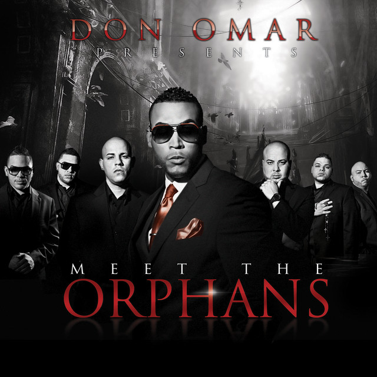
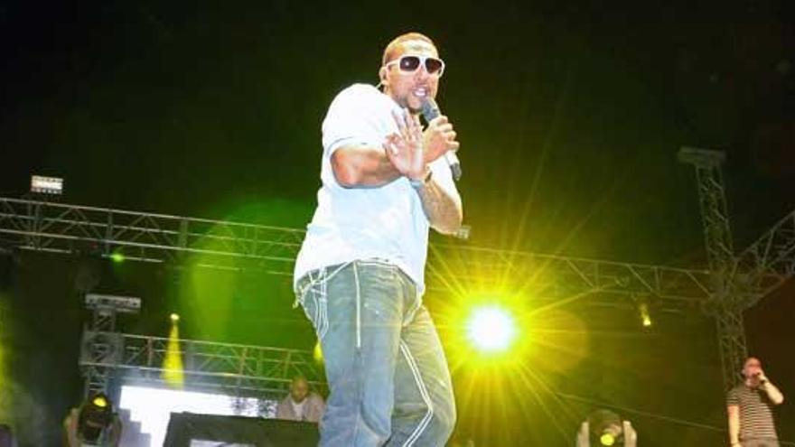
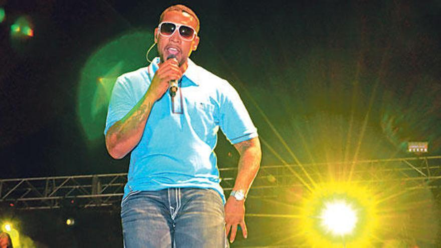
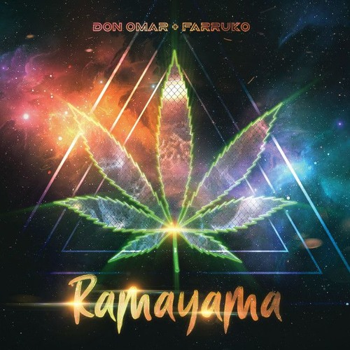
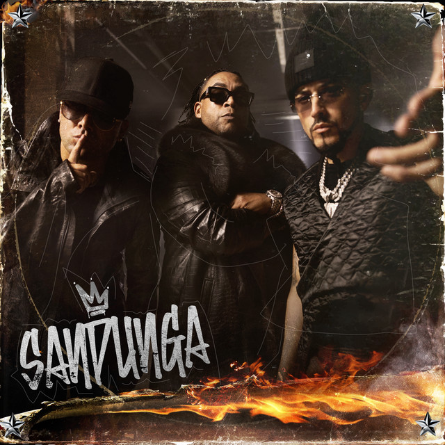
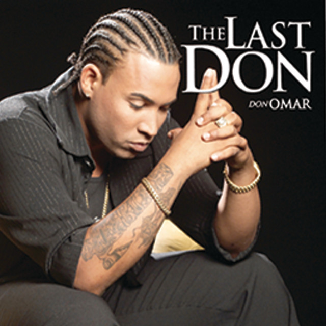
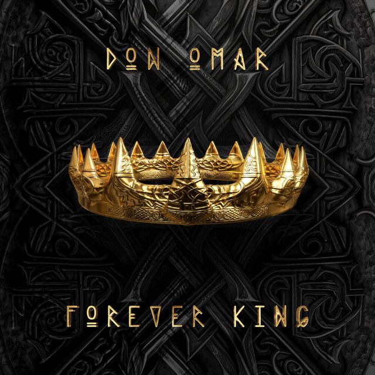

Cantó por primera vez en la producción Génesis del año 1996 en un dúo llamado Osito & Omar.
Danza Kuduro ft. Lucenzo es una canción bilingüe en español y portugués del cantante puertorriqueño Don Omar y el cantante Lucenzo lanzado el 11 de agosto de 2010.
Meet the Orphans es el cuarto álbum de estudio de Don Omar, lanzado junto con su sello discográfico Orfanato Music Group. Este álbum destacó por su innovador estilo dentro del reguetón y sus colaboraciones con otros artistas destacados del género.
El primer concierto conocido de Don Omar fue en 2011 en un Festival de Aragua, donde cautivó al público con su energía y carisma sobre el escenario.
Los últimos conciertos de Don Omar comenzarán a principios de marzo de 2024, llevándolo a ciudades como Reading, Brooklyn, Newmark, Toronto, Montreal, Chicago, Houston, San Antonio, Los Ángeles, Palm Springs y San José. Estos eventos marcarán el cierre de una exitosa carrera musical.
"Ramayana" fue el primer sencillo de Don Omar, junto a Farruko, que encabezó la lista Hot Latin Songs y se convirtió en un éxito instantáneo dentro del género urbano.
"SANDUNGA", lanzada junto a Wisin y Yandel, es la última canción de Don Omar hasta la fecha. Esta colaboración muestra su capacidad para seguir innovando en el reguetón y mantenerse relevante en la industria musical.
"The Last Don" es el álbum de estudio debut de Don Omar, publicado el 17 de junio de 2003. Este álbum estableció a Don Omar como una figura prominente en la escena del reguetón, presentando éxitos que resonaron en toda Latinoamérica.
"Forever King" es el octavo álbum de estudio de Don Omar, publicado de manera anticipada el 15 de junio de 2023. Este álbum representa la evolución musical de Don Omar y su capacidad para seguir innovando dentro del reguetón.
William Omar Landrón Rivera (San Juan, Puerto Rico; 10 de febrero de 1978), más conocido por su nombre artístico Don Omar, es un cantante, rapero, compositor, productor musical, empresario y actor puertorriqueño. Es considerado como el «rey del reguetón» tanto por críticos como por fanáticos de la música. Don Omar ha incursionado en diversos géneros musicales como la salsa, la bachata, el merengue y la balada, demostrando su versatilidad y su influencia en la música latina contemporánea.